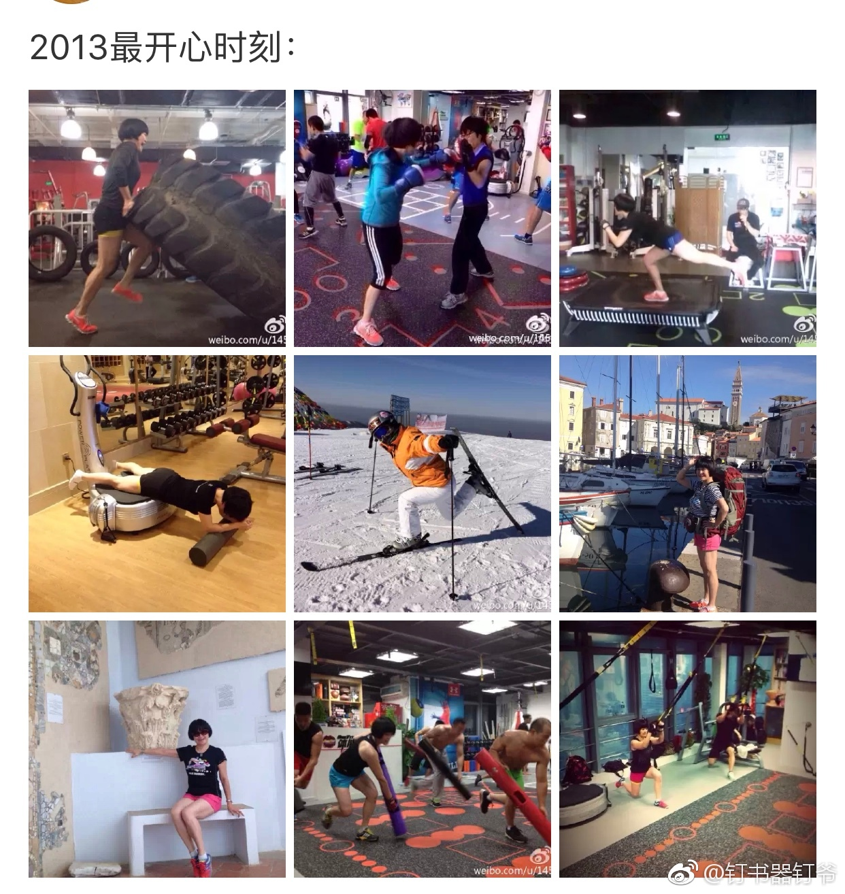
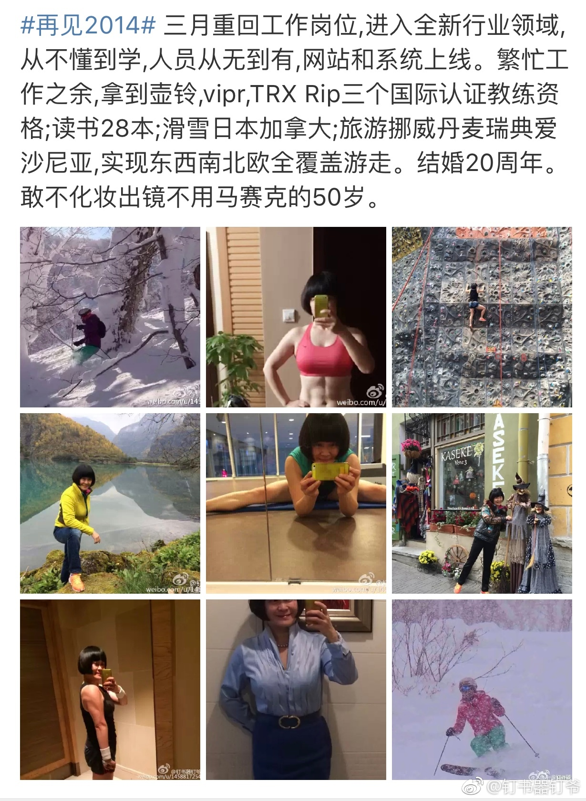
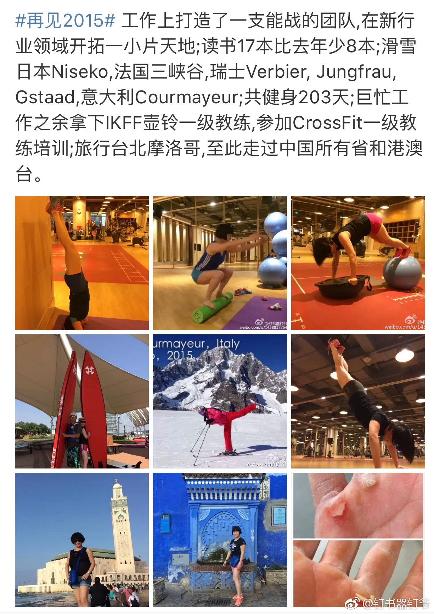
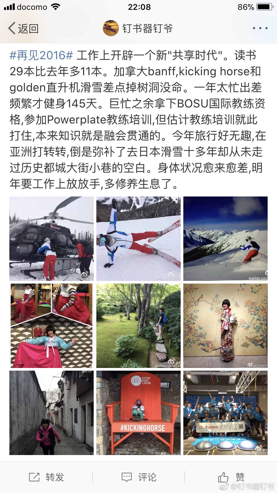
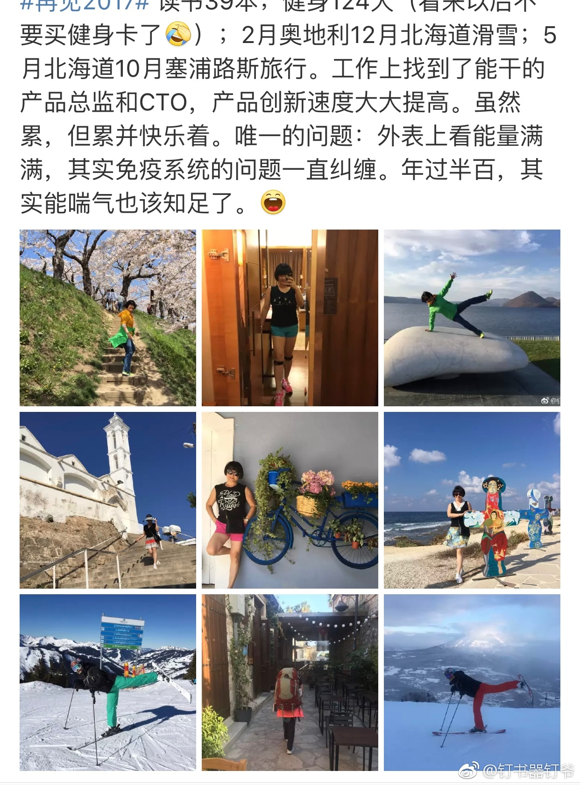

因为搜索#健身#无意关注到@钉书器钉爷 赞叹她的工作和生活，酣畅淋漓，很肆意，喜欢健身就去考了N多健身教练证书，自己辅导自己。最值得提的是她年龄过50了，生命力依旧旺盛得很。女生应该多关注下这类励志榜样。@钉书器钉爷:从2013到2017一路走来。2013年因为手术在家休息一年不上班，那一年应该是最开心疯玩的一年。重回职场后身体每况愈下，但是既然答应了小盆友们我要和他们一起再走三年，就要遵守自己的承诺。希望小盆友们快快成长，你们成长了，我才可以在家过清闲自在的日子。 日本·二世古 